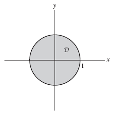

With
\(z_0=8\) Let
\(\mathcal{S}\) be the surface of the cylinder and
\(\mathcal{R}\) the region enclosed by
\(\mathcal{S}\text{.}\) We compute the two sides of the Divergence Theorem:
\begin{equation*}
\iint_{\mathcal{S}} \mathbf{F} \cdot d\mathbf{S} =
\iiint_{\mathcal{R}} \text{div} (\mathbf{F}) \,dV
\end{equation*}
We first calculate the surface integral.
Step 1. Integral over the side of the cylinder. The side of the cylinder is parametrized by
\begin{equation*}
\Phi (\theta ,z)=(\cos \theta , \sin \theta ,z),\quad 0\le \theta \le 2\pi ,\quad 0\le z\le 8
\end{equation*}
\begin{equation*}
\mathbf{n} = \left\lt \cos \theta , \sin \theta ,0 \right>
\end{equation*}
Then,
\begin{equation*}
\mathbf{F} \left(\Phi (\theta ,z)\right)\cdot \mathbf{n} =
\end{equation*}
\begin{equation*}
\left\lt 5 \cos \theta ,8 z,5\sin \theta \right> \cdot \left\lt \cos \theta , \sin \theta ,0 \right>=
\end{equation*}
\begin{equation*}
5 \cos^2\theta +8 z \sin \theta
\end{equation*}
We obtain the integral
\begin{equation*}
\iint_{\mathrm{side}} \mathbf{F} \cdot d\mathbf{S} =
\int_0^{8} \int_0^{2\pi } \left(5 \cos^2\theta +8 z \sin \theta \right) \,d\theta \,dz=
\end{equation*}
\begin{equation*}
40 \int_0^{2\pi } \cos^2\theta \,d\theta +\left(\int_0^{8} 8 z \,dz\right)\left(\int_0^{2\pi } \sin \theta \,d\theta \right)=
\end{equation*}
\begin{equation*}
40\cdot \left(\frac{\theta }{2}+\frac{\sin 2\theta }{4}\bigg|_0^{2\pi }\right)+0=
40\pi
\end{equation*}
Step 2. Integral over the top of the cylinder. The top of the cylinder is parametrized by
\begin{equation*}
\Phi(x,y)=(x,y,8)
\end{equation*}
with parameter domain
\(\mathcal{D}=\lbrace (x,y):\, x^2+ y^2\le 1\rbrace\text{.}\) The upward pointing normal is
\begin{equation*}
\mathbf{n} ={\mathbf{T} }_x \times {\mathbf{T} }_y =
\left\lt 1,0,0 \right>\times \left\lt 0,1,0 \right> =
\end{equation*}
\begin{equation*}
\mathbf{i} \times \mathbf{j} =\mathbf{k}
= \left\lt 0,0,1 \right>
\end{equation*}
Also,
\begin{equation*}
\mathbf{F} \left(\Phi (x,y)\right)\cdot \mathbf{n} = \left\lt 5 x,64,5 y \right>\cdot \left\lt 0,0,1 \right>=5 y
\end{equation*}
Hence,
\begin{equation*}
\iint_{\mathrm{top}} \mathbf{F} \cdot d\mathbf{S} =\iint_{\mathcal{D}} 5 y \,dA=0
\end{equation*}
The last integral is zero due to symmetry.

Step 3. Integral over the bottom of the cylinder. We parametrize the bottom by
\begin{equation*}
\Phi (x,y)=(x,y,0),\quad (x,y)\in \mathcal{D}
\end{equation*}
The downward pointing normal is
\(\mathbf{n} = \left\lt 0,0,-1 \right>\text{.}\) Then
\begin{equation*}
\mathbf{F} \left(\Phi (x,y)\right)\cdot \mathbf{n} = \left\lt 5 x,0,5 y \right>\cdot \left\lt 0,0,-1 \right> =-5 y
\end{equation*}
We obtain the following integral, which is zero due to symmetry:
\begin{equation*}
\iint_{\mathrm{bottom}} \mathbf{F} \cdot d\mathbf{S} =\iint_{\mathcal{D}} -5 y \,dA=0
\end{equation*}
Adding the integrals we get
\begin{equation*}
\iint_{\mathcal{S}} \mathbf{F} \cdot d\mathbf{S} =
\end{equation*}
\begin{equation*}
\iint_{\mathrm{side}} \mathbf{F} \cdot d\mathbf{S} +\iint_{\mathrm{top}} \mathbf{F} \cdot d\mathbf{S} +\iint_{\mathrm{bottom}} \mathbf{F} \cdot d\mathbf{S}
=
\end{equation*}
\begin{equation*}
40\pi +0+0=40\pi \quad\mathbf{(1)}
\end{equation*}
Step 4. Compare with integral of divergence.
\begin{equation*}
\text{div} (\mathbf{F} ) =
\text{div} \left\lt 5 x,8 z,5 y \right>=
\end{equation*}
\begin{equation*}
\frac{\partial }{\partial x}(5 x)+\frac{\partial }{\partial y}(8 z)+\frac{\partial }{\partial z}(5 y)=5
\end{equation*}
\begin{equation*}
\iiint_{\mathcal{R}} \text{div} \left(\mathbf{F} \right) \,dV =
\iiint_{\mathcal{R}} 5 \,dV=
\end{equation*}
\begin{equation*}
5\iiint_{\mathcal{R}} \,dV=5\, \mathrm{Vol} (\mathcal{R})
= 5\cdot \pi \cdot 8=40\pi\quad\mathbf{(2)}
\end{equation*}
The equality of
\(\mathbf{(1)}\) and
\(\mathbf{(2)}\) verifies the Divergence Theorem.